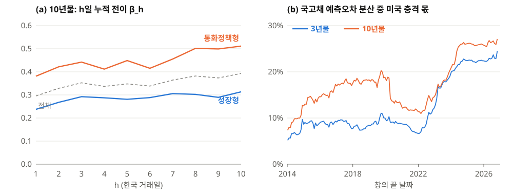

연구 프로세스 한눈에 보기 · 금융계량경제학 기말 프로젝트 · 설계 v8 · 본문 초안(reports/본문_초안.pdf)과 같은 결과 기준 (2026-11-26)
STEP 1 · 질문
무엇을 묻나
국고채 하루 움직임 중 미국 몫이 커졌다
왜? ① 미국 충격 확대 ② 1bp당 전이 강화 ③ 한국 고유 변동 축소
›
STEP 2 · 자료
일별 시점 맞추기
2010-01 ~ 2026-10, 4,140일
한국 3년 ← 미 2년 한국 10년 ← 미 10년
미국 충격 → 다음 날 한국
›
STEP 3 · 기초 사실
전이와 미국 몫
β ≈ 0.29 / 0.30
미국 몫 3년 4% → 18%
10년 11% → 20%
VAR로도 같음
›
STEP 4 · 핵심 분해
세 요인
① 충격 확대 확인
② 전이 강화 확인
③ 국내 변동 오히려 커짐
①이 ②보다 큼 확인 못 함
블록 부트스트랩, Holm 8개
›
STEP 5 · 확인
다른 모형으로
VAR 분산분해
GARCH 연도별 분해
충격 크기 구조변화 2014·2022
›
STEP 6 · 보조 ①②
무엇이 β를 가르나
시장 조건 키우지 않음
통화정책형 충격 10년물 더 넘어옴
›
STEP 7 · 보조 ③
변동성·위험관리
변동성 전이 있음
예측·VaR 개선 없음
결론 (미리 정한 해석 규칙 적용 후)
미국 몫이 커진 것은 미국 충격이 커져서이기도 하지만, 1bp당 전이 자체가 강해졌기 때문이다(0.20–0.23 → 0.33–0.37). 10년물에서는 전이 강화가 주된 요인이다.
미국 2년물 충격은 제로 금리 하한기(2010년대 초)보다 분산이 네 배 커졌다. 한국 고유 변동은 오히려 커져 몫을 깎았다. 3년물에서는 충격 확대의 기여가 조금 더 컸지만 유의하지 않고 기간 선택에 민감하다. 같은 크기 충격의 전이를 그날의 시장 조건은 키우지 않았고, 통화정책형 충격은 10년물로 더 넘어온다(10bp당 3.8bp 대 2.4bp).
왜 분해가 중요한가
충격이 커진 것이면 미국 변동성 국면의 일시적 현상이고, 미국이 조용해지면 몫도 줄어든다. 전이가 강해진 것이면 시장이 더 깊이 연결된 것이라 미국이 조용해져도 남는다. 정책·투자 대응이 달라진다.
분석의 순서와 규칙
부분
정한 시점
검정
보조 ① 시장 조건
결과 보기 전 (11-14 개요, v6)
양측, Holm 6개, 설정 A·B 둘 다 통과해야 "유의"
보조 ② 충격 성격
설계 문서 커밋 뒤 실행 (v6)
미리 정한 방향, Holm 8개
보조 ③ 변동성
면담(11-25) 뒤, 결과 전 커밋 (v7)
Holm 8개 + 기술 분석
핵심 미국 몫 분해
주제 전환(11-26), 결과 전 커밋 (v8)
블록 부트스트랩, Holm 8개, 해석 규칙 고정
1 / 6
자료와 시점: 무엇을 언제 아는가
한 행 = 한국 거래일 하루. 조건은 한국 t일 마감 때 이미 알려진 값만 쓴다. 미래 정보가 섞이지 않는다.
목표·충격두 만기 짝
한국 (목표)
미국 (충격)
국고채 3년
미 국채 2년 (정책 기대 기준 만기)
국고채 10년
미 국채 10년 (같은 만기)
출처: ECOS(한국), FRED(미국). 견고성에서 미 3년·5년물로도 교체(R1)
보조 ①시장 조건 변수
경로
변수
예측
반대 경로 (− 쪽)
P1 정책 기대
|국고채 1년 − 기준금리|
+
국내 정책 요인이 금리를 주도
P2 외국인 수급
외국인 3년 선물 누적 순매수 (250일 z)
+
외국인 수요가 상승 압력을 받아 냄
P3 글로벌 위험
log VIX
+
미국 금리 변화가 안전자산 수요
"+" = 조건이 클수록 더 많이 넘어온다(주 경로). 세 경로 모두 반대 경로도 있어 양측 검정. P1은 직접 근거가 가장 약함. 모두 표준화(1 = 1 표준편차)
보조 ②충격 성격 변수
변수
1인 날
비율
mon
미국 금리와 NASDAQ이 반대 방향 (통화정책형)
약 43%
FLAT
|미 2년 변화| > |미 10년 변화| (단기물이 더 움직임)
26–37%
Hoek, Kamin & Yoldas(2022) 착안. 두 분류의 상관은 거의 0(10년물 0.01)
2 / 6
핵심 분석: 미국 몫은 왜 커졌나
설계 v8(docs/미국몫_분해설계.md)을 분해 계산 전에 커밋(8579148). 기본 식을 2010–2019년(전기)과 2020–2026년(후기)에 따로 추정해 비교한다.
국고채 움직임 = β·s(t) (미국 부분) + e(t+1) (한국 고유 부분) → 미국 몫 VR = β²σ²_s / (β²σ²_s + σ²_e)
로짓 변화 = log[VR/(1−VR)]의 후기 − 전기 = 2Δlog|β| (전이 강화 C_β) + Δlog σ²_s (충격 확대 C_s) − Δlog σ²_e (국내 변동 C_e) · 순서와 상관없이 정확히 나뉨
기간별전이 계수, 충격 크기, 미국 몫
짝
기간
β
미국 충격 (bp)
한국 고유 (bp)
미국 몫
VAR 몫
3년물
2010–19
0.204
3.1
3.1
4.1%
6.0%
2020–26
0.325
6.2
4.3
18.2%
19.1%
10년물
2010–19
0.228
4.9
3.3
10.6%
11.0%
2020–26
0.366
6.0
4.3
20.5%
21.6%
충격·고유 크기 = 표준편차. VAR 몫 = 4변수 VAR(시차 1, Cholesky 미국 → 한국) 10일 분산분해
확증미리 정한 검정 (블록 부트스트랩 20일 × 1,999회, Holm 8개)
가설
예측
3년물 (95% 구간)
10년물 (95% 구간)
판정
L1 미국 몫 증가
+
+14.2%p [9.4, 19.5]
+9.9%p [4.0, 15.9]
확인 (방향 이미 봄)
L2 충격 확대 C_s
+
1.38 [1.09, 1.70]
0.39 [0.19, 0.59]
확인
L3 전이 강화 C_β
양측
0.93 [0.43, 1.53]
0.95 [0.48, 1.40]
확인 (+)
L4 국내 변동 C_e
양측
−0.65 [−0.99, −0.32]
−0.56 [−0.82, −0.30]
확인 (국내 변동 증가)
L5 C_s > C_β
+
0.46 [−0.23, 1.08]
−0.57 [−1.09, −0.02]
확인 못 함
L2–L4 Holm p ≤ 0.005. L5: 3년물 Holm 0.14(방향은 맞음), 10년물은 반대로 전이 강화가 더 큼. 블록 10·60일에서도 같은 결론. 2020년을 빼면 3년물 L5 보정 전 p 0.040
기술VAR 롤링 몫과 10년물 연도별 분해
(b) GARCH 조건부 분산 + 연도별 β, 표본 평균 대비 로그 차이. 충격 크기는 2022–24년에 몰리고, 전이 계수는 2013·2016·2023–24·2026년에 높다
미리 정한 해석 규칙 → 결론
L5 확인?
›
예 → "주로 충격이 커진 탓"
아니오 + L3 확인 → "전이 자체가 강해졌다"
미국 충격 크기의 구조변화(sup-Wald): 미 2년 2014-11(제로 금리 하한 끝무렵), 미 10년 2022-01(연준 급속 인상 시작)
3 / 6
보조 ①·②: 같은 크기의 충격은 언제 더 넘어오나
처음 설계(v6)의 질문. 결과를 보기 전에 정한 가설을 그대로 검정했고, 결과를 본 뒤의 해석은 보정 없이 따로 표시한다.
Δy(t+1) = α + ( β₀ + β₁·|kr1y_gap| + β₂·fut3 + β₃·log VIX )·s(t) + γ′z(t) + ρ·Δy(t) + 더미 [ + trend + s×trend ] + ε · 충격 성격: + β_m·(s × mon) P2는 상승분 s⁺ × fut3로 검정 · 양측 · 설정마다 Holm 6개 · 설정 A(trend)와 B(없음) 둘 다 통과해야 "유의" · mon = 미국 금리와 NASDAQ이 반대로 움직인 날
보조 ①시장 조건 (10년물, 계수 (Holm p))
가설
A: trend 있음
B: trend 없음
판정
P1 s × |kr1y_gap|
−0.024 (0.204)
−0.026 (0.262)
기각 못 함
P2 s⁺ × 외국인 선물
−0.075 (0.022)
−0.061 (0.148)
설정 의존
P3 s × log VIX
−0.034 (0.044)
−0.035 (0.016)
유의 (반대 부호)
예측은 모두 +(전이 확대). 3년물은 어느 가설도 통과 못 함. 결합 Wald: 10년 p < 0.0001, 3년 p 0.13–0.22
사후 해석 (보정 없음)
외국인: 효과가 미국 금리 상승일에만 있음(p 0.009), 같은 해 안에서도 유지 → 두터운 외국인 수요가 충격을 받아 내는 완충 해석과 맞음
VIX: 같은 해 안에서만 보면 약해짐(p 0.19), 2020년 이후에 집중, 신용 스프레드를 넣으면 사라짐(p 0.46) → 위험한 날보다 위험한 시기의 효과, 신용위험과 구분 못 함
보조 ②충격 성격 (Holm 8개)
10년물 전이: 성장형 0.238 · 통화정책형 0.381 (차이 t 4.4, N1은 효과를 본 뒤 넣어 확증에서 뺌)
점검
3년 Holm p
10년 Holm p
N2 곡선 분류(FLAT)로도 같나
0.77
0.002
N3 변동성도 더 키우나
0.43
0.072
N5 표본 밖 예측 개선
0.22
0.00005
N7 조건 모형보다 나은가
0.18
0.058
경제적 크기 (미국 10bp 충격, 10년물)
평소 3.0bp · 2010–19년 2.3bp → 2020–26년 3.7bp
성장형 2.4bp · 통화정책형 3.8bp
외국인 선물 +1 표준편차 −0.75bp · VIX +1 표준편차 −0.34bp
기간 사이의 전이 강화(1.4bp) = 성격 차이(1.4bp) > 조건 효과(0.3–0.8bp)
4 / 6
보조 ③: 변동성 전이와 위험관리 (수업 모형)
면담 피드백("회귀식만 쓰지 말고 수업 모형을 활용하라")을 반영. 설계 문서(docs/조건별전이_4부_변동성설계.md)를 결과 전에 커밋하고 실행. 다른 부분의 가설·판정은 그대로.
평균식 Δy(t+1) = μ + β₀·s(t) + ρ·Δy(t) + 더미 + ε(t+1) · 분산식 h(t+1) = ω + α·ε(t)² + β·h(t) + c·s(t)²/100 + d·log VIX(t) Student t 오차 · c, d ≥ 0 (분산은 음수 불가) → d = 0 검정은 경계 문제라 χ̄² 우도비 · VIX = 지속적 공변량 (Han & Park 2008, Han & Kristensen 2014; LN4)
확증미리 정한 8개 (Holm)
검정
예측
3년
10년
판정
V1 VIX가 변동성을 더 설명 (d > 0)
+
d = 0 (p 0.50)
d = 0 (p 0.50)
확인 못 함
V2 VIX 높은 날 c 차이
양측
−0.19 (p 0.45)
−0.07 (p 0.80)
확인 못 함
V3 미국 충격으로 변동성 예측 개선
+
−0.06% (p 0.57)
+0.26% (p 0.33)
확인 못 함
V4 VIX를 더해 예측 개선
+
−0.03% (p 0.76)
−0.10% (p 0.93)
확인 못 함
Holm p 모두 1.000. V3·V4: 1,000일 롤링 창, 20일마다 재추정, 3,140일 예측. 실제 변동성 대용치 = 기준 모형 예측오차², QLIKE 손실(Patton 2011), DMW 단측(LN2).
기본 GARCH-X: 변동성 전이 자체는 있다
미국 충격² 계수 c: 3년 0.28 (p 0.014), 10년 0.99 (p < 0.001). 미국 충격이 큰 날 다음 날 국고채가 더 흔들린다. 그러나 표본 밖 예측은 나아지지 않는다.
보조(사후, 보정 없음): 외국인 선물 포지션이 많은 날 상승 충격의 변동성 전이가 작다(3년 p 0.0007, 10년 p 0.033) → 보조 ①의 완충 해석과 같은 방향.
기술VaR 1일 1% 위반 비율 (기대 1%, LN6)
모형
3년
10년
RiskMetrics (λ = 0.94)
1.9%
1.9%
G0 GARCH(1,1)-t
1.4%
1.6%
G1 + 미국 충격²
1.5%
1.6%
G2 + 미국 충격² + log VIX
1.5%
1.6%
모든 모형이 꼬리 위험을 작게 잡음(Kupiec 기각). 미국 정보로 개선 없음.
기술여러 날 전이와 VAR 분산분해

여러 날(LN2): 되돌아가지 않고 10일에 0.39–0.42로 누적. 10년물 성격 차이도 유지.
VAR(LN3): [미 2년, 미 10년, 국고 3년, 국고 10년], 미국 먼저인 Cholesky. 국고채 10일 변동 중 미국 몫 3년 13%, 10년 16%. 롤링: 2014년 5–7% → 2026년 24–27%.
기술공적분 (LN1)
국고 10년–미 10년, 국고 3년–미 2년 모두 기각 못 함 (Phillips–Ouliaris, Johansen). 금리 수준의 장기 관계가 없어 변화(차분)로 분석한 설계가 맞다.
5 / 6
검증 장치와 진행 기록
"여러 번 시도해서 하나 건졌다"는 비판을 막기 위한 장치와, 무엇을 언제 정했는지의 기록(git 커밋).
진행 기록
11-14
연구 개요 확정: 가설 3개, 예측 부호(+), 대표 변수, Holm 6개
11-15
자료 수집, 첫 전체 결과. 양측 검정·trend 통제가 같은 커밋에서 처음 문서화
11-20
선행연구로 변수 확정. 충격 성격(mon) 추가 (효과를 본 뒤)
11-23
팀원 가설 변경안 2개 (부호 뒤집기·단측 전환 → 채택하지 않음)
11-24
통합안 v3 → v6: 사전 가설·해석·새 검정 구분, 충격 성격 검정 고정(결과 보기 전 커밋), 근거 전면 검토
11-24
충격 성격 검정 실행, 견고성을 설정 A로 재실행, API 키 없이 재현 확인
11-24
본문 초안(17쪽). 시점 서술 수정·같은 날 점검, Granger·sup-Wald, 사후 탐색 R13, 인용 원문 확인
11-25
교수님 면담 → 변동성 설계 v7(보조 ③) 커밋(결과 보기 전) → 실행. 8개 모두 확인 못 함. 본문 19쪽, 재현 확인
11-26
주제 전환: 미국 몫 분해 설계 v8 커밋(결과 보기 전) → 실행. 충격 확대·전이 강화 확인. 본문 18쪽, 재현 확인
12-09
발표 (영어 슬라이드, 10분, 전원)
12-16
제출: 보고서 PDF, 단일 R 파일, csv, RData
다중검정과 비교 장치
질문
도구
교안
세 조건 중 하나라도 전이를 바꾸나
결합 Wald χ²(3), HAC
안
그중 어느 가설이 유의한가
HAC t + Holm
밖 (표준 절차)
중첩 예측 모형 비교
Clark–West
밖
비중첩·롤링 창 비교
Giacomini–White, DMW
안 (LN2)
미국 몫 분해의 불확실성
이동 블록 부트스트랩 + Holm
안 (부트스트랩)
미국 충격이 언제 커졌나
sup-Wald (s²)
안 (LN1)
변동성 전이·예측
GARCH-X 우도비, QLIKE + DMW
안 (LN4, LN2)
위험관리, 미국 몫, 장기 관계
VaR·Kupiec, VAR 분산분해, 공적분
안 (LN6, LN3, LN1)
14개 검정을 한꺼번에 Holm 보정해도 N2·N5(10년물)와 보조 ① P2(10년물, 설정 A)는 통과.
견고성 지도
번호
바꾸는 것
R1
충격 만기 교체 (미 2·3·5·10년)
R2
기대·기간프리미엄 분해 (KW, ACM)
R3 · R5 · R6
FOMC 전후 제외 · 극단값 처리 · 5일 평균 조건
R4 · R9
기간 분할(2010–19 / 2020–26) · 2012년 이후 표본
R7 · R8
대체 지표 (부호 있는 gap, 환율 변동성, 금리차)
R10 · R11 · R12
충격 크기 비선형 · 같은 해 안에서만 · z 창 120·500일
R13 (사후)
다른 일별 조건 6개 추가 → 통과 없음, VIX ≈ 신용 스프레드
시점·외생성
같은 날 점검 · Granger(국고채 → 미국, β₀ 불변) · sup-Wald
부록으로 보낸 것
LASSO(조건을 데이터가 고르게 함): 아무것도 선택하지 않음 → 조건 효과가 약하다는 보조 ①과 같은 방향
잔차 진단(Ljung–Box), 표본외 전체 비교, 14개 Holm 표: 결과 파일(RData, 표 csv)에만
MCS: 하지 않음 (다일 지속성·변동성 예측·공적분은 보조 ③으로 실행)
남은 일
☑ 본문 초안 18쪽 (주제 전환 반영) · ☑ 재현 점검
□ 새 참고문헌 6편 원문 대조
□ 팀 번호·저자 이름 · □ 나머지 서지 대조
□ 영어 발표 슬라이드 (새 주제)
□ 제출 직전 재현 점검 한 번 더
한계
분해는 두 기간 평균 비교라 전이가 강해진 원인은 가리지 못함 · 3년물 우위 요인은 기간 선택에 민감 · mon은 하루 단위 근사라 거칠다 · 주가와 금리가 같은 뉴스에 함께 반응했을 수 있다 · 반대 부호의 설명은 사후 해석 · VIX와 신용위험 구분 불가 · 시점이 완전히 나뉘지 않음 · 변동성 대용치(예측오차²)가 거침